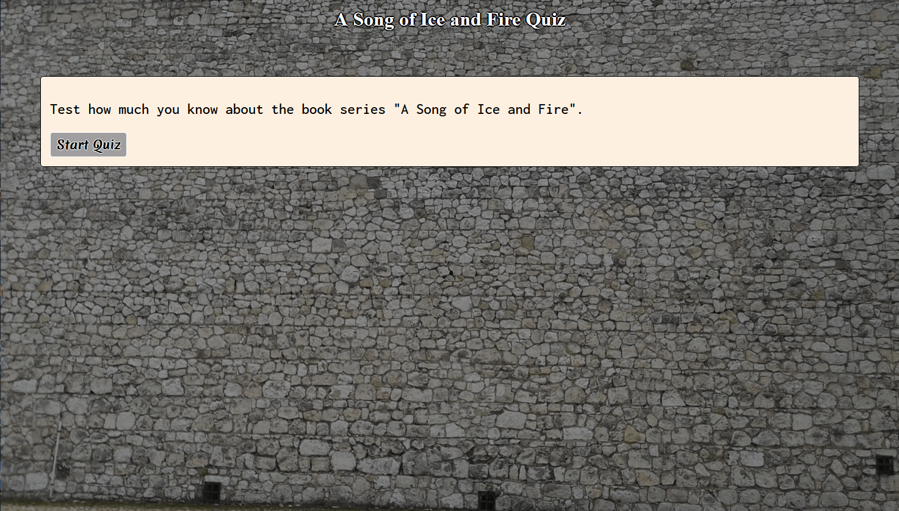

My name is Ken Wright and I enjoy writing code that manipulates
data and data structures.
A little more about me
I love writing code. It gives me an opportunity to flex my
creativity muscles by writing code that is flexible, easy
to understand, and easy to build on top of. Writing code
also gives me an opportunity to work with other programmers
to come up with interesting solutions to complex problems.
I mostly work with JavaScript, and I use Git to track
changes.
Outside of writing code, I enjoy: making sculptures of
animals, walking in parks and on nature paths, playing
video games, and volunteering for community organizations.
And I enjoy finding new activities, interests, and hobbies.
Ken's Portfolio

Quiz App
This is an interactive web app that allows users to take a
quiz. The app goes through questions one by one,
rendering them in a <form> element, and keeps track
of the question number and the user’s score. The app also
tells the user the correct answer to the question after
they pick their answer. When the quiz is over, the app
tells the user their final score and allows them to restart
the quiz. The app uses responsive design, semantic HTML,
and it follows a11y best practices.
The Explore Wildlife App helps people discover what kinds of wildlife have been seen in locations worldwide. Users can refine their search by specifying which types of wildlife they want to see (Mammals, Plants, Fish, Fungi, etc.), searching for a particular species by name, and/or setting a time period during which the wildlife were seen. Each result includes pictures of the organism, a brief exerpt from the Wikipedia page about the organism, and a link to the Wikipedia page.